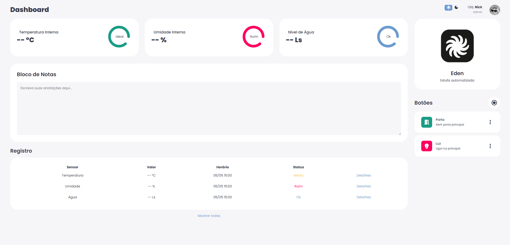

Portfólio
Vandae Greenhouse
Projeto desenvolvido na Bosch para uma estufa automatizada, capaz de coletar e monitorar dados do ambiente e controlar manual ou automaticamente funções da estufa, como ligar luzes e acionar o sistema de irrigação. O sistema foi implementado com foco em eficiência, confiabilidade e análise de dados em tempo real.
